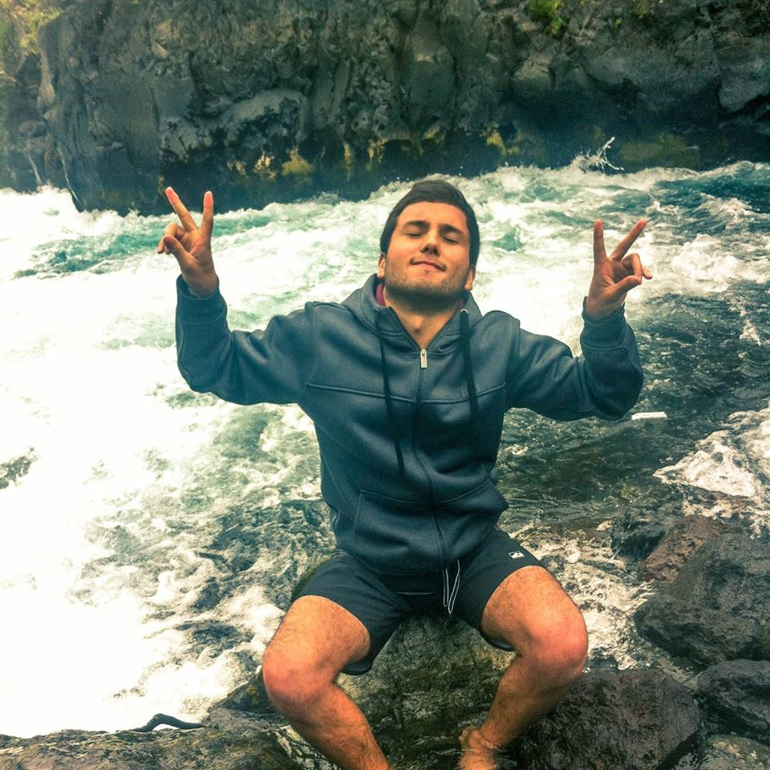

Sobre mí

Mi nombre es Felipe Andrés Balbontín Gallegos, tengo 22 años y soy estudiante de quinto año de Ingeniería Civil en Informática en la PUCV. Me gusta mucho el desarrollo de soluciones informáticas innovadoras. Me considero alguien autodidácta, participativo y me gusta el trabajo en equipo.
AstroMath
Desarrollo de software educativo para las operaciones básicas en el ramo de matemáticas en cursos de 3ro a 4to básico.
Proyecto probado en el año 2017 para las multiplicaciones, comparando con resolución de guías y obteniendo mejores resultados. En el año 2018 se actualizó a una versión que incorpora una plataforma que usa técnicas de gamificación y se comparó con la versión anterior.
Proyecto obtuvo el tercer lugar en la ExpoSoftware realizada el año 2017 por la Pontificia Universidad Católica de Valparaíso. Desarrollado en GameMaker Studio, PHP, Angular y MySQL.
Versión de navegador
Versión gamificada